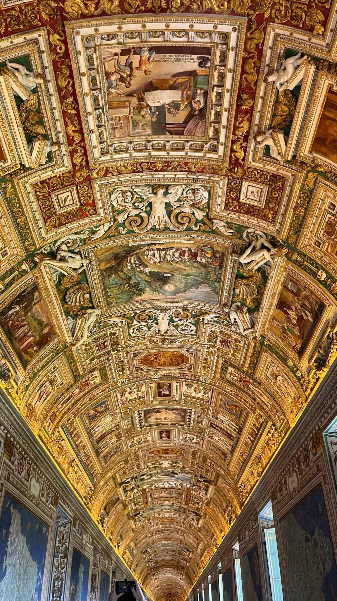

Meet me, Teodora Najdoska!
Hey, I'm Teodora Najdoska — a college student based in Macedonia, studying Software Engineering with a passion for technology, clean code, and user-centered design. I’m driven by curiosity, creativity, and a constant desire to grow in both development and design.
Alongside my technical skills, I’ve developed a strong interest in UX/UI design, where I enjoy creating intuitive and visually appealing user experiences.
I love exploring new tools and trends in design, prototyping interfaces, and learning how to make digital products not just work well — but feel great to use.
Friends and Family
I really love my family and friends—they mean so much to me.
I honestly cherish everyone in my life and feel super lucky to have them around.
They've been my biggest support through everything,
and I’m just really thankful to have them with me.
Education
I graduated from high school from Gimnazija Mirce Acev Prilep, and now I’m a first-year student at FINKI, studying Software Engineering.
At first, I was pretty nervous about starting in this field since everything seemed so new and complicated.
But as I got into it, I found myself really enjoying it—especially backend stuff and frontend programming.
It’s cool how the technical and creative sides come together, and I’m glad I picked this path.
I’m not as experienced as some since this is my first year really digging deep into software engineering, but I’m excited to keep learning and improving.
This year flew by and honestly went great—I’ve learned a lot. This summer, I’m planning to focus even more, check out different areas, and take some online courses to build my skills.
I want to use this time to get better at what I enjoy.I’m really looking forward to learning with my friends, working on new projects, and getting a better understanding of everything.
This summer, we will be having fun, explore new topics, and challenge ourselves with exciting projects.
Travel
Hungary, Austria, Croatia, Italy, Montenegro...
Budapest, Vienna, Rome, Vatican City, Kotor, Pag...


Traveling is one of my greatest passions.
There's something truly special about stepping into a new city, hearing a different language, trying unfamiliar food,
and immersing myself in the rhythm of a culture different from my own.
So far, I've been lucky enough to explore a lot of different places.
From the stunning architecture of Rome to the coastal charm of Kotor, every destination has taught me something new and unforgettable.
Traveling inspires my personal and creative growth.
One of my biggest dreams is to one day be able to work remotely while continuing to travel the world.
Combining what I love with the freedom to explore is my ultimate goal — and every journey brings me one step closer to making that dream a reality.